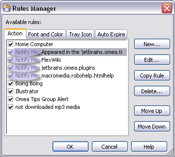

Using "Notify Me" Notifications and Desktop Alerts
Notify Me is another useful Omea Reader’s Omea Pro’s organizational tools. With it, you can set up notifications of various kinds for incoming resources. For example, you might set up a notification that triggers when you receive e-mail from your boss. a particular person posts to a newsgroup.
Notify Me notifications are really just Rules. The Notify Me feature merely provides a quick way to set up Rules that notify you when certain things happen. You can set up Notify Me notifications for:
- E-mail: you can be notified when mail is received from a particular sender
- Newsgroup articles: you can be notified when a particular person posts to a newsgroup, and/or when a post occurs in a particular thread.
- Feeds posts: you can be notified for example when new articles appear in a particular feed.
- Contacts: You can be notified when anything arrives from a particular Contact.
Creating Notifications
This section describes how to create a Notify Me notification for different resource types.
E-mail Messages
To create a Notify Me notification for e-mails:
- Go to the Items List in the Mail tab.
- Locate a message from the correspondent you want to be notified about when mail arrives from him/her.
- Select the message and choose Tools | Notify Me on the main menu, or Notify Me on the context menu of the message.
The Notify Me dialog appears.
Notify Me dialog for e-mail
- Check one or more of the notification options, supplying any necessary information they require.
The Notify Me rule is created and activated when you click OK to close the dialog.
Newsgroup Articles
To create a Notify Me notification for newsgroup articles:
- Go to the Items List in the News tab.
- Locate an article posted by the correspondent you want to be notified about when mail arrives from him/her.
- If you want to be notified about both correspondent and thread, select a post by the correspondent in the relevant thread.
- Choose Tools | Notify Me on the main menu, or Notify Me on the context menu of the article.
The Notify Me dialog appears.
Notify Me dialog for a threaded newsgroup article
- Check one or more of the notification options, supplying any necessary information they require.
The Notify Me rule is created and activated when you click OK to close the dialog.
RSS/Atom Feeds
To create a Notify Me notification for RSS/Atom Feeds:
- Select the feed in the Feeds pane.
- Right-click and choose Notify Me on the context menu of the feed.
The Notify Me dialog appears.
Notify Me dialog for an RSS or Atom feed
- Check one or more of the notification options, supplying any necessary information they require.
The Notify Me rule is created and activated when you click OK to close the dialog.
Here is an example of creating a notification rule for a feed and how the notification message can look.
Notify Me rule and alert window example
Contacts
To create a Notify Me notification for a Contact:
- Go to the Items List in the Contacts tab.
- Locate the Contact you want to be notified about when items arrive from him/her. Select the Contact in the list.
- Choose Tools | Notify Me on the main menu, or Notify Me on the context menu of the article.
The Notify Me dialog appears.
Notify Me dialog for a Contact
- Check one or more of the notification options, supplying any necessary information they require.
The Notify Me rule is created and activated when you click OK to close the dialog.
Modifying "Notify Me" Notifications
As previously mentioned, Notify Me notifications are Rules. Therefore, you can use the Rules Manager to deactivate, modify, or delete a Notify Me notification or create a copy of the notification.
Notify Me notifications begin with Notify Me:
"Notify Me" Rules Manager dialog
Just select the desired Notify Me rule in the list of available rules and press the button in the right area of the Manage Rules dialog. For more information, see Organizing using Rules.
Customizing Desktop Alerts
When you specify a notification rule, you can optionally check the Show desktop alert option. When this option is checked, and other conditions specified in the notification rule are met, an alert window displaying the heading of new message and other information appear in the lower-right corner of your screen.
You can customize the duration of displaying a desktop alert and change the background color of the desktop alert message in the General options dialog.
See also: